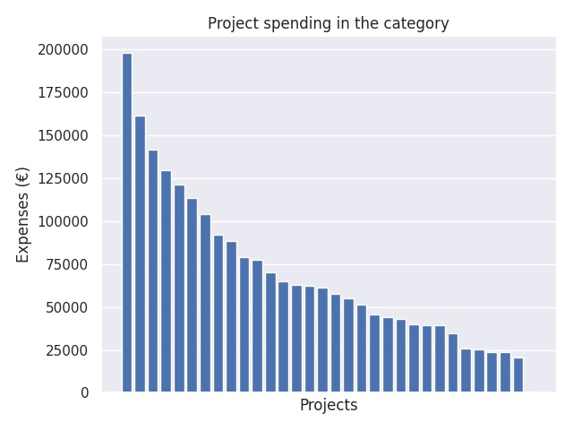

Innovatiivisten oppimisympäristöjen edistäminen esi- ja perusopetuksessa sekä lukiokoulutuksessa
Category summary
68.6K spent on average
198K highest spending

Reports in the category
Kuopion kaupunki
Project name: Uudet oppimisen arviointitavat ja oppimispolut lukiosta yliopistoon
198K spent
Kaurialan lukio / Lukioliikelaitos Tavastia
Project name: Me Muuttajat - uusi tapa toimia
162K spent
Jyväskylän koulutuskuntayhtymä / lukiokoulutus liikelaitos
Project name: eBIG - Oma polku mahtavassa lukiossa
142K spent
Joensuun normaalikoulu, Itä-Suomen yliopisto
Project name: Koe ja kokeile
130K spent
Turun kaupunki, sivistystoimiala
Project name: Ytimessä ydintaidot
121K spent
Helsingin kaupungin opetusvirasto
Project name: Personoitu Oppimisprosessisuunnitelma (POPS) – Lukion pedagogisen toimintakulttuurin muuttaminen aidosti opiskelijalähtöiseksi
113K spent
Espoon kaupunki
Project name: Suomi 100 - Joustava polku korkea-asteelle hyvillä opiskeluvalmiuksilla
104K spent
Järvenpään kaupunki
Project name: Meidän koulu muotoilee
91.9K spent
Staden Jakobstad
Project name: Inspire Innovation Lab
88.1K spent
Lappeenrannan kaupunki/Saimaan mediakeskus
Project name: Lukion pedagogiikkaa uudistamaan (LUPU)
79.2K spent
Vantaan kaupunki, perusopetus
Project name: Käsityön innovatiiviset oppimisympäristöt Vantaan perusopetuksessa
77.7K spent
Raseborgs stad
Project name: MAKE: Making som ett ämnesövergripande tema i den finländska skolan
70K spent
Lappeenrannan kaupunki/ Saimaan mediakeskus
Project name: Yksilöllistä polkua eteenpäin
65K spent
Viipurin Reaalikoulu oy
Project name: Luova lukio - innovatiivisen oppimisen yhteisö
62.6K spent
Joroisten kunta
Project name: Frisbaa - Luonnontieteitä ja tietotekniikka liikunnallisesti frisbeegolfin avulla
62.2K spent
Savonlinnan kaupunki
Project name: Voit(olla) paras oppija!
61K spent
Otavan Opisto / Mikkelin kaupunki
Project name: Oppikamu - Vertaisoppimisen tukeminen verkossa
57.8K spent
Vantaan kaupunki
Project name: Kulttuuritili eli Kultsi
54.8K spent
Joensuun kaupunki
Project name: Lukion pedagogiikkaa uudistamaan (LUPU)
51.1K spent
Rovaniemen kaupunki / koulupalvelukeskus
Project name: Lukiot liikkeelle
45.7K spent
Vanda stad, bildningsväsendet
Project name: Learning by sharing
44.1K spent
Haapajärven kaupunki
Project name: Tubeta Tiedettä - luonnontieteiden ilmiöt esityksiksi
43.1K spent
Vantaan kaupunki
Project name: Tulevaisuuden oppimistila - digioppimisen Living Lab
40K spent
Laukaan kunta/Laukaan lukio
Project name: LAUKAA VIISAS
39.3K spent
Pedersöre kommun, Pedersöre gymmasium
Project name: Det gränslösa gymnasiet
39.2K spent
Ylivieskan kaupunki
Project name: Jokiranta 360
34.4K spent
Savitaipaleen kunta
Project name: Virtaa Kuolimosta
25.9K spent
Tampereen yliopiston normaalikoulu, lukio
Project name: Rikotaan rajoja, muutetaan tapoja
25.5K spent
Lovisa stad/Lovisa Gymnasium
Project name: Moderna inlärningsmiljöer i Lovisa Gymnasium
24K spent
Itä-Suomen yliopisto/Savonlinnan normaalikoulu
Project name: Koulu360
23.9K spent
Rautalammin kunta/ Rautalammin lukio
Project name: Sisä-Savon lukioden yhteinen tietekniikkahanke
20.4K spent
Sibbo kommun
Project name: Främjande av ny verksamhetskultur i gymnasieutbildningen
0 spent